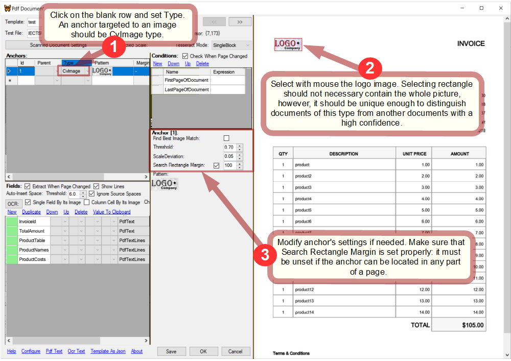
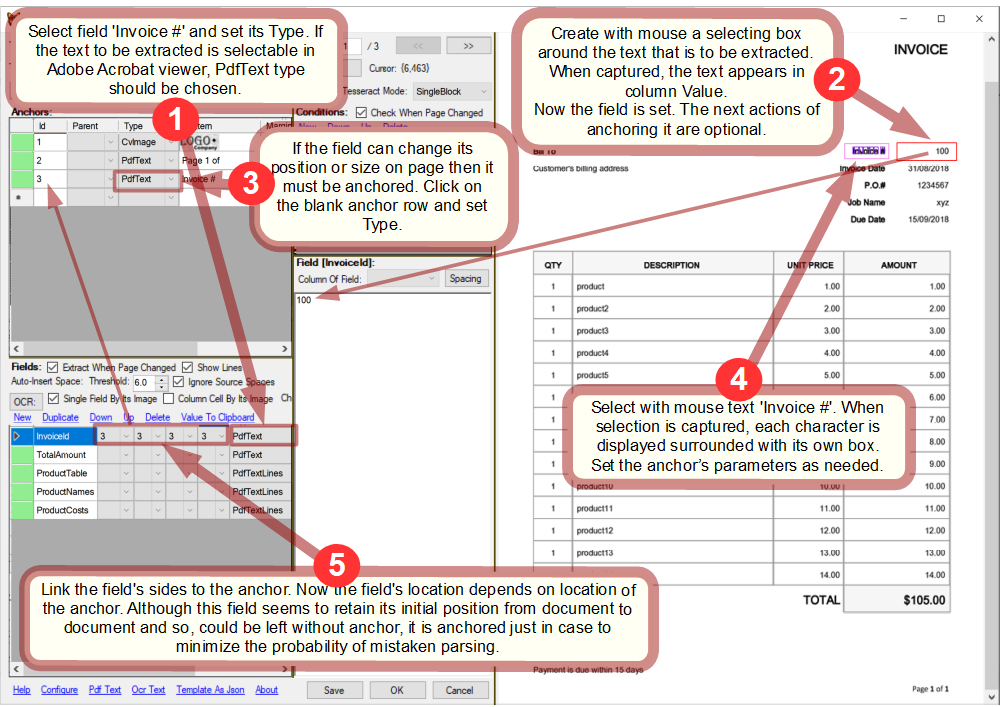
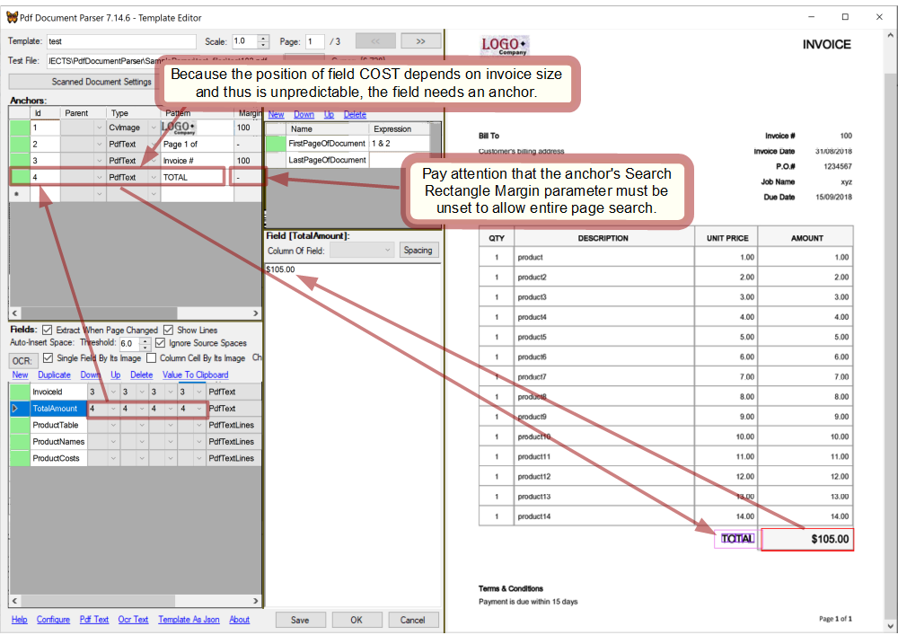

Overview
PdfDocumentParser is a parsing engine intended to extract of text/images from PDF documents that conform to a predefined graphic layout - such as invoices and the like. The main parsing approach is based on finding certain text or image fragments in page and then extracting text/images located relatively to those fragments.
Within this scope PdfDocumentParser is capable of the following:
- operating with text represented by PDF entities (meant for native PDF files);
- processing OCR'ed text (meant for scanned PDF files);
- image search/comparison/extraction (meant for either native or scanned PDF files);
PdfDocumentParser was designed to be incorporated into custom applications hopefully without need of change.
PdfDocumentParser API consists of:
- Template Editor where parsing templates can be created or debugged in an easy manner;
- Parsing API that allows custom applications to parse PDF files in a custom manner with little effort required;
It is developed in .NET.
Template Editor
Template Editor is a GUI object that can be called from a desktop application whenever editing template is required.Template Editor API
| Object | Description |
|---|---|
Cliver.PdfDocumentParser.TemplateForm |
.NET Windows Form that provides abilities of editing/debugging a template. Create TemplateForm with a TemplateManager instance as a parameter and call Show() or ShowDialog() on it. |
Cliver.PdfDocumentParser.TemplateManager |
Abstract class that must be defined with custom routines. Passed to TemplateForm() as a parameter. |
Refer to InvoiceParser as a sample of use.
Tutorial: configuring template
Because PdfDocumentParser can only be used from within a custom application developed for a certain parsing task, InvoiceParser is used as a custom application in this tutorial.InvoiceParser was designed to parse PDF files containing invoices and extract the following fields from them:
- INVOICE#
- JOB#
- PO#
- COST
Assumptions
PdfDocumentParser does not impose any requirement for PDF files except that that they must conform to some recognizable layout. On the other hand, InvoiceParser, as a custom application, was desinged with the following assumptions about PDF files made:- a PDF file can consist of multiple documents (which are invoices);
- a document can consist of multiple pages;
- any page in a PDF file is a part of a document;
These assumptions allow to keep things simple and predefine the condition collection as it will be expalined later.
Open Template Editor
A template can be created from scratch or copied from an existing one and then modified as needed.
This tutorial starts with a blank template.
Template Editor is open in a custom application, so the way of doing this depends on the application. In InvoiceParser click the blank row in the table and then click button Edit.
Open a test PDF file in Template Editor:

Create anchors
Any template needs at least one anchor intended to certainly identify the type of a document and distinguish it from the rest documents that may be parsed. Such an anchor should be targeted to some fragment of a document that is unique to its type. Obviously, this fragment must identify the document type with a high confidence. Usually a logo of company that issued the document can serve well this goal.
Create an anchor that captures the logo and thus detects if the page corresponds to the template: 
Next, from the assumptions made above follows that an invoice can be multi-page. Therefore, InvoiceParser should be capable to detect the beginning page of a document.
Create an anchor that checks if a page is the first page of a document:

NOTE: when you select a row in either table: anchors, conditions or fields, its status is updated in the head cell and the captured place is displayed in the page viewer.
Specify conditions
In general, condition collection can be any that is predefined by a custom application. In InvoiceParser, a single condition named FirstPageOfDocument is predefined. Yet not only InvoiceParser, but any application highly likely requires a condition like that as it would need to examine every PDF page for the following:
- does a page belong to a document that this template was created for?
- if it does, is the page the first page of a document?
Sometimes one more condition that checks if a page is the last page of a document may be required but the necessity of it depends on what is known about PDF files to be parsed. Within the assumptions made, this condition would be redundant.
FirstPageOfDocument must relate on anchors #1 and #2 created before exactly for it. Configure it with boolean expression "1 & 2" which is True only when both anchors are found together:

While in this sample FirstPageOfDocument is quite good with 2 anchors, sometimes more anchors may be needed: for instance when the same company issues documents of different types and thus company's logo is not sufficient to detect the type.
Set fields
Though some of the fields in this sample seem not to need linking to anchors, it is advisable to always link fields to anchors to drastically reduce the probability of mistaken parsing. It will be done so in this tutorial.
Set field INVOICE#: 
In the same way as above set the rest fields and create anchors for them: 
Check template
When all the conditions and fields are set, it's time to walk through the file and see how the template works on every page.
The page #2 begins a new invoice:

The page #3 continues and ends an invoice:

The template worked properly on the test file. Click OK to save it.
API
Refer to InvoiceParser as an alive example of using PdfDocumentParser in a custom application.Methods&properties
| Method | property | Description |
|---|---|
Cliver.PdfDocumentParser.PageCollection::ActiveTemplate |
Set active template in PdfDocumentParser. |
Cliver.PdfDocumentParser.Page::IsCondition() |
Checks if a condition is met in page. |
Cliver.PdfDocumentParser.Page::GetValue() |
Extracts a field from page. If anchor of the field was not found, NULL is returned. |
Pseudo-code
A basic algorithm of processing a PDF file with PdfDocumentParser would look like the following:
foreach(page in PdfFile)
{
if(PdfDocumentParser.ActiveTemplate == null)
{
foreach(template in templates)
{
PdfDocumentParser.ActiveTemplate = template;
if(PdfDocumentParser.IsCondition(page, "DocumentFirstPage"))
break;
PdfDocumentParser.ActiveTemplate = null;
}
}
if(PdfDocumentParser.ActiveTemplate != null)
{
if(PdfDocumentParser.IsCondition(page, "Field1Page"))
{
object value1 = PdfDocumentParser.GetValue(page, "field1");
...do something with value1...
}
if(PdfDocumentParser.IsCondition(page, "Field2Page"))
{
object value2 = PdfDocumentParser.GetValue(page, "field2");
...do something with value2...
}
...
if(PdfDocumentParser.IsCondition(page, "DocumentLastPage"))
PdfDocumentParser.ActiveTemplate = null;
}
}
The main idea is that custom operations are performed depending on conditions.
Template
To parse documents that comply with a certain layout (e.g. invoices issued by the same company) a parsing template is configured. It contains information about which data is to be extracted and how. Obviously, applying a template to documents with layout different from that it was designed for, brings to incorrect parsing.
Configuring a template is done in Template Editor and consists of the following steps:
- create anchors required for conditions;
- define conditions using created anchors;
- set fields;
- create anchors for fields that need it and link those fields to them;
- test the template on the rest pages of the file;
Anchor
An anchor is a fragment of either text or image that PdfDocumentParser will look for in a PDF page. If found, the anchor is then used by conditions or fields. A not engaged anchor itself is useless. Anchor can be used in the following ways:
- it can be linked by fields whose positions in page may vary like 'total amount' field whose position usually depends on size of invoice's content;
- it can be engaged in conditions that need to detect if a certain pattern exists in a PDF page;
- it can be linked by another anchor so that the latter becomes valid only when the former is found;
While native PDF documents in some cases can be parsed without anchors, scanned documents which usually have their margins vary should be processed only with anchors.
Linking to an anchor means that coordinates of a linked field or anchor become relative to the anchor they are linked to. That's PdfDocumentParser first will look for the anchor and then, if it is found, it will locate the linked fields or anchors depending on the location of their anchor.
The same anchor can be used by multiple conditions, fields and anchors.
General structure of anchor
An anchor consists of a single or many elements of the same type where the first element is master and the rest are secondary. Position of the master element is considered the position of the anchor itself. Secondary elements are searched relatively to the master element's position.
If some of an anchor's elements is not found then the anchor itself is not found.
The rectangle where an anchor was located on the page while creating, is named 'initial rectangle' and contains all the anchor's elements.
Anchor linked to an anchor
When an anchor is linked to another anchor, its master element is treated like a secondary element of the linking anchor.
A linked anchor is named 'child' of the linking one which is named 'parent'. Being a parent does not impose any restriction to an anchor.
The number of anchors consistently linked in a chain can be any.
Create anchor
To create an anchor, click the blank row in anchors table and choose its type. Then select with mouse a rectangle in the document page. The text or image within the selection box will be a fragment that PdfDocumentParser will look for. For more details refer to the tutorial.
If you keep Ctrl pressed while selecting, you can select more than 1 element for the same anchor. To stop selecting, you have to release Ctrl before releasing the mouse button.
Anchor types
Each of types is processed by its own very different way therefore choosing the right type is crucial in successful and robust parsing.
PdfText
This type is based on native text presentation inside a PDF file. Elements of this type are character boxes extracted from PDF entities which together present a text to be found in page. Every character is a separate anchor element.
It should be used whenever possible because it is most robust and fast.
| Parameter | Description |
|---|---|
| Position deviation | It allows to loose bonds between master element and secondary elements in a anchor when for some reason they can shift relatively to each other. It is measured in pixels and must be a positive float number, non-zero even for identical documents because of discrepancy reasoned by internal image re-scaling. |
| Position deviation is absolute | If set then position of each element is compared to the master element's position, otherwise, with the previous element's position. It makes no sense if the anchor contains no secondary element. | Search rectangle margin | When set, area where the anchor is looked for is the entire page. Otherwise, the searched area is restricted by Search rectangle margin that specifies a rectangular area around the anchor's initial rectangle. It is measured in pixels. It should be set only when it is known that the anchor is always belongs to a certain part of page. It helps to avoid undesired matching and speed up processing. |
OcrText
This type works similarly to PdfText type except that difference that character boxes are provided by OCR engine instead of native PDF entities.
It should be used only when PdfText type does not work which happens on scanned or mixed documents. It cannot not give 100% accuracy like PdfText type does and will acceptably work only for images with resolution not less than 300dpi. Also, its perfomance is slower than that of PdfText type.
| Parameter | Description |
|---|---|
| Position deviation | See PdfText. |
| Position deviation is absolute | See PdfText. | Search rectangle margin | See PdfText. |
| OCR entire page | NOTE: This switch can completely change parsing. It is because OCR by Tesseract of a larger image and a smaller fragment can give different recognition of the same text.
Which is better? OCR of entire page gives sometimes more correct results, sometimes otherwise. But it always takes considerably longer time than OCR of a smaller fragment defined by Search rectangle margin. This switch makes sense only if Search rectangle margin is set, otherwise the entire page is OCR'ed anyway. |
ImageData
Elements of this type are images which are fragments of page selected while creating an anchor.
This type should be used when anchoring to images, not to text, is required. Its perfomance is slower than that of PdfText type. Also, it may not provide 100% accuracy on scanned documents if they have essential discrepancy in size, contrast, brightness, orientation etc. In such cases, OcrText type may work better.
NOTE: even when an image fragment is sought within the same page where it was extracted from, it cannot be found without a non-zero tolerance. It happens because the search hash is produced after downsizing an image and thus pixel interpolation while restoring to the initial size gives different results for an entire image and for its fragment.
| Parameter | Description |
|---|---|
| Position deviation | See PdfText. |
| Position deviation is absolute | See PdfText. | Search rectangle margin | See PdfText. It reduces search time and helps to avoid undesired matching. |
| Brightness tolerance | While for native PDF documents it can be 0.1 - 0.2, scanned documents which have brightness discrepancy may need it higher. A higher tolerance brings to a less certain result. |
| Different pixel number tolerance | While for native PDF documents it can be 0.1 - 0.2, scanned documents which have brightness discrepancy may need it higher. A higher tolerance brings to a less certain result. |
| Find best match | If set, looks for the match with the least difference, otherwise returns the first match within the tolerance specified. |
Condition
A condition is a boolean expression that depends on anchors and is configured individually in every template.
A condition can have meaning True or False which depends on pair [PDF page, template]. In the custom code it is checked by PdfDocumentParser API method IsCondition(.
Conditions are identified by their names. A condition collection is dictated by the logic of a custom application, therefore condition names are predefined within the application's scope and are the same for all templates that belong to it.
Mostly used condition
While condition collection can vary, the following checks highly likely are needed in any application:
- does a document correspond to the template?
- is a page the first page of a document?
Depending on the parsing task, more conditions may be required: for instance that one that can detect the last page of a document.
Boolean expression
Condition expressions are composed of the following symbols: <anchor id>, '!', '&', '|', '(', ')'. When anchor referenced by <anchor id> is found then it is treated as True, otherwise False. Meaning of a condition is the boolean result of its expression.NOTE: Operands '&' and '|' are processed consequently, therefore for instance "1 | 2 & 3" and "2 & 3 | 1" are not equivalent. Parentheses should be used to manage precedence of operations.
Sample expressions:
| Expression | Description |
|---|---|
| 1 | The simplest expression which is True when anchor #1 is found. |
| (1 | 7 | 8) & 2 | Such kind of expression is useful for instance when a company can use different logos for documents of the same structure. In such a case, instead of creating several separate templates, a single template can be configured that can accept more than 1 logo image. Respectively anchors #1,7 and 8 are targeted to the expected logos. | !2 | (2 & 3) | This expression could be used for instance for a decision whether a certain field should be parsed or passed off. |
Field
A field defines certain text or image that is to be extracted from a PDF page.
Fields are identified by their names. A field collection is dictated by the logic of a custom application and thus their names are predefined within its scope and are the same for all templates that belong to it.
A field optionally can be linked to an anchor. When a field has no anchor, its selecting rectangle retains the initial position which was its position during creation. When a field has anchor, PdfDocumentParser locates the field's rectangle relatively to its anchor's actual position so that if on some page the anchor shifts, the field shifts together with it. It is advisable always to link fields to anchors thus drastically decreasing probability of incorrect parsing.
When it is definitely known that a field appears on every page and always keeps the same position then there is no need to link it to an anchor.
Set field
To set a field, select the respective row in fields table, choose its type and then select in the PDF view a rectangle from where text or image must be extracted. Then, if a field has a variable position then it must be linked to an anchor that will detect its proper location on a page. If the anchor of a linked field is not found then this field is not found too. For more details refer to the tutorial.
Field types
PdfText
Its value is a text surrounded by field's rectangle. It is obtained from PDF entities.OcrText
Its value is a text surrounded by field's rectangle. It is recognized by OCR engine.For native PDF documents this type should never be used. But for scanned documents it is the only way to get text in the digital form which can be recorded in a file or database, indexed, searched and so on.
ImageData
Its value is aSystem.Drawing.Bitmap object that contains a fragment of page surrounded by the field's rectangle.
It is used when image is required rather than text or when OCR is not reliable.
Scanned documents
Scanned documents are not the first subject for PdfDocumentParser but they are supported. PdfDocumentParser provides auto-deskew and page rotation options which are usually needed for scanned documents.
Because of quality deviations in scanned documents the image comparison tolerance parameters may need to be tuned for every anchor.
The image resolution in PdfDocumentParser must be set to not less than 300dpi, otherwise OCR will not work properly. The higher the resolution, the better OCR is. On the other hand, increasing resolution increases processing time. Also, setting resolution in PdfDocumentParser higher than the resolution of original images will not make sense. Image resolution parameter is common for all templates and is set in the configuration window.
InvoiceParser
Invoice Parser is a custom desktop application based on PdfDocumentParser. It can be used as an example of incorporating PdfDocumentParser into a custom code. Also, its custom specificity lays only in a way how PDF files are parsed, therefore the rest code can be used unchanged as a framework in a new application.Generally, it does the following:
- enhances
PdfDocumentParser.Templatewith custom properties that are not related to parsing; - stores and manages templates;
- defines
PdfDocumentParser.TemplateForm.TemplateManagerand callsPdfDocumentParser.TemplateFormfor editing templates; - processes PDF files in accordance with the custom needs;

Assumptions
- by default, a PDF file can contain documents of the same type only. However, it can be tuned for every template separately;
- once detected, a document is considered continued until the next document begins or the file ends;
These assumptions is not something deep rooted in the code and can be easily modified.
Custom template parameters
| Parameter | Description |
|---|---|
| Active | Inactive template is ignored while parsing. |
| Group | An optional mark that can be helpful for managing templates. |
| Order | A weight indicating template's order in check line. It is intended to reduce processing time. Templates with the less order are tried first. |
| DTLPage | The last page in PDF files that is to be checked for this template. It is intended to reduce processing time. |
| Filter | It is a Regex applied to PDF file path to recognize the proper template. Optional. It is intended to reduce processing time. |
| Filter | It is a Regex applied to PDF file path to recognize the proper template. Optional. It is intended to reduce processing time. |
| SFTRegex | It is a Regex that matches to names of templates that can share the same PDF file. By default it is NULL meaning that such a template if chosen for processing a PDF file cannot be changed for this file. |
Considerations
When processing documents InvoiceParser applies every active template to every new document to recognize a proper template. So, if you have 50 templates and 1000 files evenly distributed for templates, InvoiceParser will do on average 1000/2 *50 = 25,000 template tries. It may take a considerable time especially when templates use OCR. Processing time can be reduced by the following ways:
- specify file filters for templates. If it can be done then the other tips are not needed;
- specify template orders so that templates that require a longer time for recognition have a higher order. E.g. templates that use auto-deskew should be checked in the last place;
- keep templates that are known as not corresponding to the files to be processed right now, inactive;